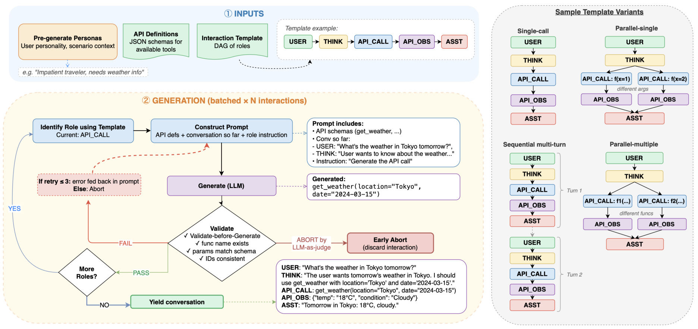
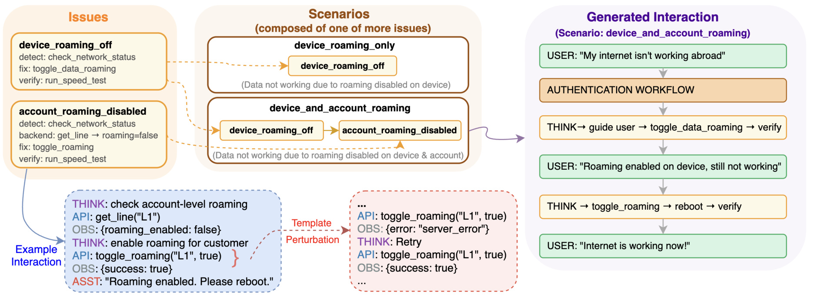
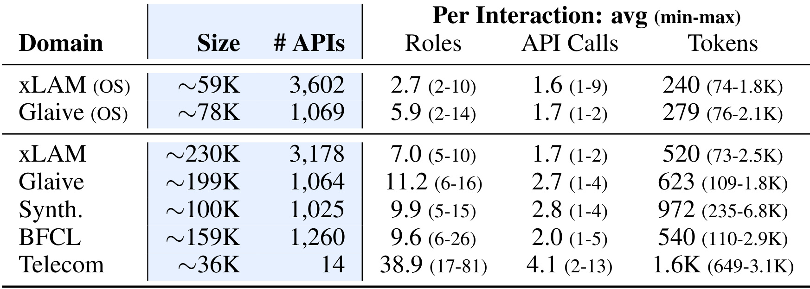
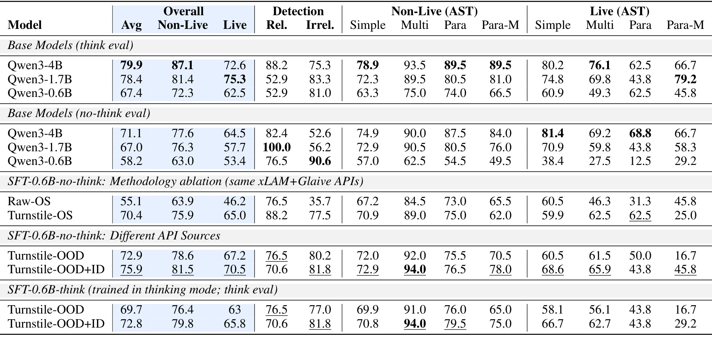
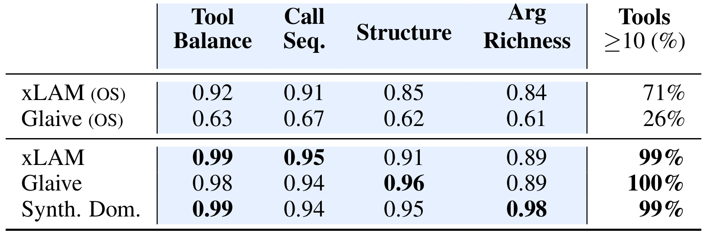
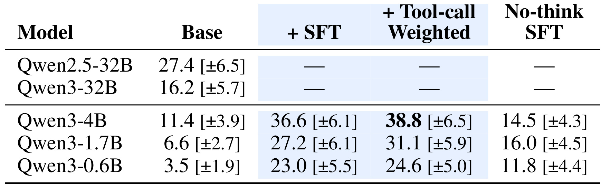
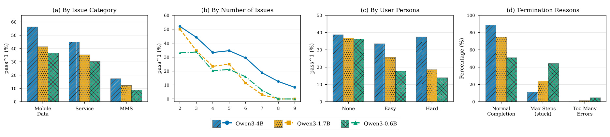
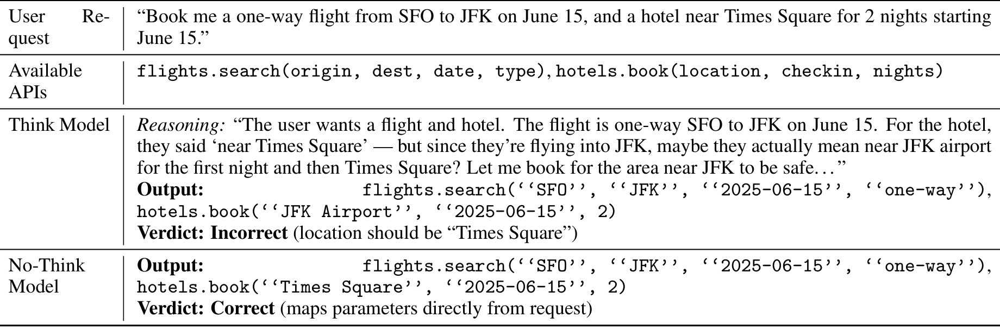
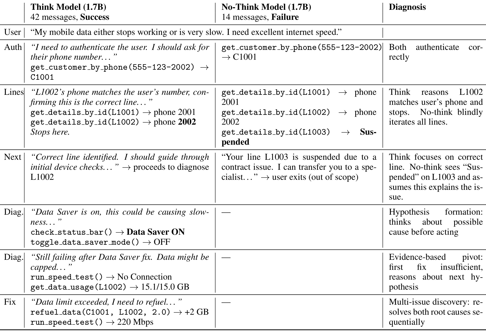

Data Turnstile：可扩展的函数调用训练数据生成框架
这篇论文研究的不是一种新的 Agent 模型，而是一条把企业 API 规范转化为函数调用监督数据的开放流水线。作者 Goutham Ramakrishnan 与 Megha Sharma 均来自 Amazon AGI；论文于 2026 年 7 月 31 日以 arXiv v1 公开，唯一论文入口为 arXiv:2607.29250。官方代码和 Synthetic Domains 数据集均已核验；后者采用 CC BY-NC 4.0，包含约 10 万条交互、1,025 个 API 和 50 余个类别。
小模型的函数调用能力被高质量多轮监督的稀缺所卡住：整段生成容易把一次错误扩散成畸形调用与虚假工具结果，而依赖真实 API 执行又难以覆盖任意业务规范。需要一种能从 API 定义出发、逐步约束和纠错、同时不要求后端可执行的数据生成方法。
1. 背景和问题
函数调用模型处在语言模型与外部系统之间：它既要理解用户意图，又要从候选工具中判断“该不该调用、调用哪个、参数如何填写”，还要解释工具返回、维护多轮状态并遵守领域政策。大模型可以依靠容量、上下文示例和在线推理缓冲部分监督噪声，但 0.6B—4B 的小语言模型更依赖监督微调。它们的优势恰好是低延迟、低推理成本和端侧隐私，弱点却是难以从少量、含错或结构单一的数据中自行归纳稳定的 Agent 行为。因而，这篇论文把问题重心从“再做一个更大的工具模型”移到“怎样制造小模型真正学得会的数据”。
这里的“高质量”不只是 JSON 能解析。一次合格交互至少要同时满足四层约束：用户请求自然且与场景一致；函数名与参数服从 schema；参数值来自用户或已观察状态，不能凭空补全；API observation 必须合理，并能因果地支持下一轮动作。多轮情况下，认证、诊断、修复和验证还必须按正确顺序发生。一处早期幻觉会改变后续全部状态，例如模型先猜出一个客户 ID，后面即使每个调用都语法正确，整条轨迹仍把“知道未来答案”教给了学生模型。结构合法与语义正确并不是一回事，而小模型会把这种错因果直接记成策略。
既有合成路线大致有两个端点。ToolBench 一类 single-shot 方法让教师模型一次产出完整对话，调用次数少、实现直接，但任务长度一上升，教师模型就容易生成不自然轮次、错误参数、畸形调用和不合逻辑的工具结果。APIGen 一类执行验证路线会真的调用后端，因此格式与执行正确性更强，却只适用于存在可执行实现的 API；对尚未部署的内部接口、隐私工具或只有 OpenAPI/JSON schema 的规范，它无法自然扩展。前者缺逐步控制，后者被后端可用性限制，而且很多方案依赖闭源前沿模型，导致成本、数据主权和复现实验都受约束。
Data Turnstile 的研究问题可以分成三个层次。第一，能否把长交互拆成教师模型更可靠的原子步骤，同时在错误发生处立即反馈，而不是等整条对话生成完才做后验过滤？第二，能否显式控制单调用、并行调用、多工具、多轮、澄清、拒绝和失败恢复的比例，而不是只靠 temperature 带来表面措辞变化？第三，当数据由便宜的开放权重模型本地生成时，是否足以让 0.6B—4B 模型在 BFCL 与 τ²-bench 上接近或超过大得多的零样本模型？
论文的定位也需要收窄。它不是通用 Agent 可靠性的完整方案：Turnstile 负责离线数据生产，下游模型上线时不运行这个框架；它也没有证明所有 API 都能在不执行的情况下验证语义。论文真正主张的是，把生成拆成带类型、带依赖、带验证和重试的 role 状态机，可以显著改善监督数据的可用性与可控多样性。证据来自 Qwen3 一个模型家族、BFCL 单轮任务和 τ²-bench Telecom 多轮领域；跨模型家族、真实生产流量与安全敏感工具仍未验证。
从大模型工程角度看，这项工作的价值在于把 Agent 数据视为可编译、可测试的工件：API schema 类似类型系统，role 依赖类似执行计划，验证器类似单元测试，错误反馈类似局部重试。从推荐与搜索系统角度，它也有相近迁移意义：当 LLM 需要调用召回、过滤、库存、价格或重排工具时，训练样本的关键不是“说得像对话”，而是每个调用都与前序用户证据、候选状态和业务规则一致。Data Turnstile 提供的是这种数据工程骨架，而不是对某一业务结论的保证。
2. 方法
2.1 交互模板与逐角色生成
Turnstile 的核心抽象是 interaction template。原文把它定义为一个有向无环图：
符号解释：(T) 表示一类交互的结构模板；(V) 是 role 节点集合，每个节点对应一个原子生成步骤；(E) 是 role 间的有向依赖边，决定当前步骤能读取哪些先前输出；(Theta) 是生成规格与上下文，包括 API 定义、用户 persona、场景信息和质量检查。这个公式不是训练损失，而是论文对生成任务如何被分解的正式描述。本文的核心贡献以流程为主，主文没有 Turnstile 专属损失函数；实验训练使用常规 SFT，多轮实验只额外报告了 tool-call token 的 5 倍损失权重变体。
作者定义 USER、THINKING、API CALL、API OBS 和 ASSISTANT 五类 role。模板只固定骨架，不固定内容；同一 (T) 可以对 (Theta) 进行不同采样，得到结构相同但 API、persona 与参数不同的交互。每次生成当前 role 时，prompt 只组合三类必要信息：完整模板的结构轮廓、已经生成的前序 role 输出、当前 role 专属的约束与上下文。这样 USER 节点可以知道后面预期出现某个 API CALL，从而提出自然触发它的请求；API CALL 节点则能读取用户证据与 thinking，而不是面对整段尚未约束的对话一次性猜完。

Figure 2 可以沿两条路径读。蓝色与绿色路径是成功状态机：persona、API schema 与交互模板进入 Builder，Builder 识别当前 role，构造只含所需上下文的 prompt，教师 LLM 生成一个节点，验证通过后判断是否还有后续节点；全部完成才产出整条 conversation。红色路径是局部纠错：validate-before-generate、函数名存在性、参数 schema 和 ID 一致性任一失败，错误会被写回下一次 prompt；在预设预算内重试，超过预算或判断不可恢复则提前丢弃。右侧四种模板变体说明“多样性”首先来自结构分布：single-call、parallel-single、sequential multi-turn 与 parallel-multiple 的 role 拓扑不同，并非同一骨架换几句表达。图中还揭示一个重要边界：Turnstile 不执行真实工具，它依靠 schema、状态一致性和模型判别形成近似语义验证，因此验证器与教师模型可能共享盲区。
多实例生成时，Builder 维护彼此独立的状态并交给 vLLM 连续批处理。逐 role 会增加请求次数与 prefill，但总输出 token 与 single-shot 大致相近。作者认为额外开销可由更小的每步 prompt、paged attention 的 KV cache 复用、continuous batching 与 chunked prefill 摊薄。这里没有给出端到端成本表，因此“更便宜”主要来自可使用本地 Qwen2.5-32B-Instruct 取代闭源 API，以及错误发生时保留已生成前缀；它不等价于已经证明单位合格样本的 GPU 成本最低。
2.2 分层校验、错误反馈与提前终止
质量控制分两层。第一层是确定性的 structural validation：序列级规则保证 API OBS 紧跟 API CALL、THINKING 出现在行动前；role 级规则检查函数名、必填字段、JSON 格式和参数 schema。第二层是生成前语义复核：在产生下一 role 之前，让 LLM 按预先定义的错误标准检查上一 role，捕捉“参数虽合法但无来源”“观察结果与状态不一致”等结构规则难以发现的问题。两层次序很关键，便宜且确定的检查先挡住大多数格式错误，昂贵且不稳定的 judge 留给语义一致性。
失败后不是从头再生整条轨迹，而是在当前节点携带错误原因重试。这相当于把信用分配从“这整条对话不好”缩小为“这个参数没有证据”或“这个 observation 不是合法 JSON”。若错误可修复，前面已经通过的 role 继续保留；若 judge 认为因果链已无法恢复，则 early abort，避免把坏前缀包装成成功样本。方法真正的可扩展性来自“局部约束 + 局部重试”：它让开放权重教师只处理一个可验证子任务，而不是要求它一次具备完整 Agent 能力。
这套设计也有明确风险。LLM-as-Judge 仍可能漏掉常识错误，schema 也无法证明真实执行语义；如果生成器和验证器使用同一模型家族，共同偏差可能让错误稳定通过。实际部署应把确定性验证尽量前移，例如枚举值、ID 生命周期、权限、跨字段约束和状态转移都用代码检查，只把自然性与难形式化的因果一致性交给模型。论文的开源框架提供插入检查的位置，但不会自动为企业写好这些领域不变量。
2.3 多样性控制与生成系统实现
Turnstile 把多样性拆成三个可控制层级。模板层决定单调用、并行、多工具和多轮数据的混合权重，例如可以显式配置 50% 单 API 单轮、25% 多 API 单轮和 25% 多轮；参数层从 (Theta) 采样 API 名、persona 与场景，使同一骨架产生内容差异；动态扰动层主动制造 API 执行失败、信息缺失和用户不配合，让学生模型学习澄清、重试与恢复。temperature 只能改变一次解码的随机性，无法保证数据中确实出现这些行为，因此作者强调“分布控制”而非“文本变化”。
实现上有四个组件：Role 封装生成约束与验证；Template 组合 role 及其依赖；Builder 是维护批量状态、调度生成与重试的控制器；API Library 提供可插拔 API 定义。顶层配置选择模板分布、API 库、教师模型与超参数。对于训练数据，作者还加入语义相似 distractor API，迫使模型区分相近工具，而不是见到唯一函数就机械调用；irrelevance 数据则通过“为一个不可用工具生成用户请求”的扰动构造，专门训练拒绝行为。
这一模块在训练与推理阶段的职责不同。生成阶段显式保留 THINKING 能帮助制作带 CoT 的轨迹，但下游 SLM 可以选择 think 或 no-think 模式训练；线上推理只运行微调后的模型，不携带 Template、Builder 或验证重试器。因此单轮场景可以用 no-think SFT 换取低延迟，多轮诊断则可能保留 reasoning。作者后续实验表明这不是统一超参数，而是由任务需要的状态推演深度决定。
2.4 从 API 规范到政策驱动的多轮场景
通用 BFCL 数据主要从 1K 以上 API 定义出发，Telecom 领域却只有 14 个 API，难点变成遵守政策、维持长状态并和用户协作排障。作者引入 Issue 与 Scenario：Issue 是最小问题单元，包含用户症状、诊断步骤/工具与修复动作，通常对应 4—8 个 role；Scenario 把一个或多个 Issue 与认证等共享流程组合起来，再加入 persona 与环境状态。团队从政策文档手工整理出 17 个 Issue 和 34 个组合 Scenario。

Figure 3 左侧把“漫游关闭”拆成设备级与账户级两个 Issue，每个都明确 detect、fix 和 verify；中间展示同一“海外无法上网”表象既可来自单根因，也可来自双根因，Scenario 因而控制诊断深度而非只改用户措辞。下方蓝框是一条正常 API/OBS 轨迹，红框插入 server_error 后要求 THINKING 选择重试；右侧最终交互还包含认证、引导用户修改设备、再次验证与账户侧修复。信息流的关键是，Issue 提供可复用的因果片段，Scenario 负责组合和共享流程，扰动再改变执行路径。这样生成器可以系统覆盖“修完一个根因仍未成功”的多问题任务，而不是期待教师模型随机想到第二个故障。
Telecom 模板还会模拟 API 失败、缺信息、用户不合作或不熟悉技术，并把多个 Scenario 通过“还需要其他帮助吗”连接成更长会话。最终生成约 3.5 万条交互，平均 39 个 role、1.6K token，明显长于单轮数据。训练时模型需要从 policy、用户回答和工具 observation 中连续更新假设；推理时 Issue/Scenario 不再显式存在，但学生模型已在轨迹中见过认证、定位、修复、复验和继续排障的顺序。
3. 实验结果
3.1 数据、任务和训练设置
单轮实验使用 BFCL v3 的 Simple、Multiple、Parallel、Parallel Multiple、Relevance 与 Irrelevance 六类任务，函数正确性通过 AST 解析评估。作者用 Qwen2.5-32B-Instruct 在 8 张 H100 的 p5.48xlarge 上生成数据，来源包括 xLAM、Glaive、Synthetic Domains 与 BFCL 自身 API。下游对 Qwen3-0.6B 做全量 SFT：AdamW、学习率 5×10⁻⁵、50 步线性 warmup、有效 batch 64、最大长度 4096。多轮 Telecom 则微调 0.6B、1.7B、4B，最大长度 8192，1.7B 与 4B 使用 DeepSpeed ZeRO Stage 2。

Table 1 不能只看 Size。原始 xLAM/Glaive 有约 5.9 万/7.8 万条，Turnstile 从相近 API 池生成约 23 万/19.9 万条；但更重要的是 role 和调用结构：Glaive 原始数据平均 5.9 个 role、1.7 次调用，Turnstile-Glaive 达 11.2 个 role、2.7 次调用。Synthetic Domains 约 10 万条、1,025 个 API，平均 9.9 个 role 与 972 token。Telecom 虽只有 14 个 API、约 3.6 万条，却平均 38.9 个 role、4.1 次调用和 1.6K token，说明它检验的是长状态诊断而不是工具覆盖。规模与复杂度同时变化，因此后文最有说服力的消融应优先看“同 API schema、不同生成方法”的 Raw-OS 对 Turnstile-OS，而不是直接把所有提升归因于更多样本。
3.2 BFCL：生成方法而非样本数量带来的增益
作者比较 Qwen3 0.6B/1.7B/4B 基础模型的 think 与 no-think 推理，以及 0.6B 在不同数据上的 SFT。Turnstile-OS 和 Raw-OS 共享 xLAM+Glaive API schema，构成方法学对照；Turnstile-OOD 再加入 Synthetic Domains，测试更广 API 覆盖；OOD+ID 最后加入 BFCL API 定向数据，测试目标 schema 对齐。这个分层设计能分别回答“生成质量是否有效”“跨 API 多样性是否有效”“部署前针对固定 API 生成数据是否再有增益”。

Table 2 的主结论有四层。第一，Turnstile OOD+ID 的 0.6B no-think 达 75.9%，高于同规模基础模型 think 的 67.4% 和 no-think 的 58.2%，接近 1.7B think 的 78.4% 与 4B think 的 79.9%；这说明高质量 SFT 可以省掉单轮 CoT 时延，但尚未完全追平更大模型。第二，同 API 池下 Raw-OS 只有 55.1%，Turnstile-OS 为 70.4%，+15.3pp 是最能归因于生成方法的结果。Raw-OS 还把 irrelevance 从基础 0.6B 的 81.0% 降到 35.7%，原因是训练样本几乎总调用工具；Turnstile 的拒绝扰动恢复到 77.5%。第三，加入 Synthetic Domains 后 70.4%→72.9%，再加 BFCL ID 数据后 72.9%→75.9%，表明广覆盖与目标对齐提供不同增益。第四，OOD+ID 的 think SFT 只有 72.8%，低于 no-think 的 75.9%，尤其 live parallel-multiple 为 29.2% 对 45.8%；单轮工具填槽中过长推理会引入新错误。
也要注意表中的不均衡。OOD+ID 并非每个子项都最好，例如 Live Parallel 从 OOD 的 50.0 降至 43.8，Irrelevance 也没有超过 Turnstile-OOD；BFCL ID 数据主要改善整体目标分布，不保证所有细类单调上升。论文没有报告多随机种子 SFT 方差，因此 2—3pp 的小差异不宜被解释为稳定收益。相较之下，Raw-OS 到 Turnstile-OS 的 15.3pp、以及拒绝检测的 41.8pp 差距更难由训练噪声单独解释。
3.3 多样性与生成质量
附录 B 用四个指标把“多样”从口号变成量化。设工具 (i) 的调用数为 (c_i)，不同工具数为 (K)，工具均衡性是归一化熵：
符号解释：(p_i) 是工具 (i) 的经验调用频率，(D_{\mathrm{tool}}=1) 表示所有工具被同样频繁地使用。调用序列也按规范化顺序模式 (s_j) 计算熵：
符号解释：(q_k) 是第 (k) 种调用顺序在数据集 (D) 中的频率，连续并行调用会先排序成统一表示；越接近 1，交互顺序越不集中。角色结构则对排除 SYSTEM 后的 role 序列抽取 4-gram：
符号解释：(r_k) 是第 (k) 种 role 4-gram 的频率，(K_4) 是不同 4-gram 数，指标衡量 USER、THINK、API CALL、API OBS、ASSISTANT 的局部结构覆盖。参数丰富度对每个合格工具重复抽样：
符号解释：(mathcal{T}) 是调用数至少为 (n) 的工具集合，论文取 (n=10)、重复 (R=50) 次；分子计算一次抽样中不同参数键值组合的数量。它衡量参数取值是否重复，但不判断参数是否真实或业务上合理。

Table 3 在相同 API 来源下仍显示稳定差距。xLAM 原始数据到 Turnstile-xLAM：Tool Balance 0.92→0.99，Call Sequence 0.91→0.95，Structure 0.85→0.91，Arg Richness 0.84→0.89；Glaive 的提升更大，分别为 0.63→0.98、0.67→0.94、0.62→0.96、0.61→0.89。Synthetic Domains 的 Arg Richness 达 0.98。最后一列同样重要：只有 26% 的 Glaive 原始工具拥有至少 10 次调用、能进入参数丰富度计算，Turnstile-Glaive 为 100%。因此高分不只是 temperature 造成的文本变化，而是模板采样让更多工具、顺序和结构获得覆盖。不过这些都是内部分布指标，没有检测跨样本语义重复，也没有证明高多样性必然带来 benchmark 增益；真正的外部证据仍是 Table 2。
生成过程给出另一组质量信号：从 12.5 万个模板实例得到约 10 万条成功交互，成功率约 84%。成功样本中约 22% 至少经历一次错误并靠反馈重试救回；被标记错误中 87% 来自结构验证，余下主要来自 per-role LLM-as-Judge。复杂度越高失败越多：并行调用数从 1 增到 4 时，失败率从 7% 升到 22%；多轮 turn 从 1 增到 3 时，从 7% 升到 13%。这同时证明重试有价值，也说明模板分解没有消除长轨迹难度。
Synthetic Domains 的人工评估只抽取 100 条、由两位标注者按 1—5 分评价，正确性、自然性、groundedness 均值为 4.4、3.8、4.5。自然性低于另外两项，符合模板数据可能结构工整但对话略显人工的预期。样本小、没有报告一致性系数或与基线盲评，因此这部分只能作为质量抽查，不能替代下游实验。
3.4 τ²-bench：领域适配与工具 token 加权
τ²-bench Telecom 有 114 个任务，每个模型评估四次，报告成功任务比例 pass^1 及 95% 置信区间。训练数据约 3.5 万条，由 14 个 API 和政策文档生成。标准 SFT 使用 CoT；加权变体把 API call token 的 loss 乘 5，以强化占总 token 比例很小但决定执行正确性的动作；no-think 变体训练和评估都不含 CoT。

Table 4 表明领域数据对三个规模都有效：0.6B 从 3.5% 提到 23.0%，1.7B 从 6.6% 提到 27.2%，4B 从 11.4% 提到 36.6%，绝对增益分别为 19.5、20.6、25.2pp，且作者指出基础与 SFT 的 95% CI 不重叠。4B SFT 超过 Qwen2.5-32B-Instruct 的 27.4%，1.7B SFT 基本相当，0.6B SFT 也超过 Qwen3-32B 的 16.2%。工具 token 加权进一步把三者推到 24.6%、31.1%、38.8%，方向一致，但每个增量都落在较宽置信区间内，论文也只称其“值得继续探索”，不能据此断言 5 倍权重普遍最优。no-think SFT 降至 11.8%、16.0%、14.5%，与 BFCL 的结论相反：多轮诊断必须形成假设、读取 observation 后修正，并在一个根因解决后继续检查其他问题。
最强结论是“有领域适配的小模型可以超过无适配的大模型”，而不是“0.6B 普遍优于 32B”。这些 32B 是零样本参考，没有用同一 Telecom 数据微调；比较证明数据贴合任务的价值，但没有隔离容量上限。训练和测试共享领域政策及 14 个 API，虽然任务实例不同，仍属于强 domain adaptation。对企业来说，这恰好是实用场景：固定工具集下可生成定向数据；对通用 Agent 能力来说，外推证据有限。
3.5 容量边界、复杂度与失败模式
平均 pass^1 掩盖了任务难度差异。作者按投诉类别、issue 数量、用户 persona 和对话终止原因拆分 114 个任务，比较 Turnstile SFT 后的 0.6B、1.7B 与 4B。

Figure 4(a) 中 Mobile Data 最容易，4B 约 56%，1.7B 约 41%，0.6B 约 36%；MMS 最难，三者都低于约 18%。(b) 显示 issue 数增加时 pass^1 近似单调下降，训练只包含最多 3-issue 场景，模型却可解决部分 4—5 issue 任务；到 7 issue 时，论文报告 4B 仍有 18.8%，1.7B 与 0.6B 仅 3.1% 和 6.3%，容量差距被长状态放大。(c) 中 4B 对 Hard persona 仍约 37.5%，接近无 persona 的 38.8%；0.6B 则从 36.3% 降到 13.9%。(d) 的终止原因最能解释这种差距：4B 有 88.6% 正常结束，0.6B 有 44.1% 达到最大步数、4.8% 因过多错误终止。小模型不是不会所有工具，而是在复杂用户和长上下文中更容易进入幻觉循环。
这组分析也暴露数据改进方向。MMS 和高 issue 数任务可能需要更丰富的组合场景；0.6B 的循环问题可能需要显式终止监督、状态摘要或对错误恢复轨迹做更高权重。作者因预算没有继续增加困难类别，因此 Figure 4 是诊断，不是已有解决方案。尤其 8—9 issue 附近样本量可能较少，图中没有给每个切片置信区间，末端折线不宜过度解读。
3.6 CoT 不是统一收益项
BFCL 里 no-think 优于 think，而 Telecom 多轮中结论相反。附录 A 用三个案例说明差别不是简单的“推理越多越好”，而是任务是否需要跨 observation 更新状态。
Table 5 的用户要求从麦当劳订一份大号意大利辣香肠披萨，可用工具只有通用的 Uber Eats 下单函数。think 模型先看到“用户想订餐”，再猜测麦当劳可能在平台上，最终调用工具；它用流畅推理掩盖了“麦当劳不卖披萨、没有适用工具”这一常识冲突。no-think 模型反而直接拒绝。这个案例对应 Table 2 的 Irrelevance 任务：单轮判断的证据已经完整，继续生成解释会增加自我说服的搜索空间。它说明 CoT 在函数调用中可能成为行动偏置，而非校验器。更稳妥的设计是把拒绝/相关性判定置于调用前的受约束分类步骤，或用数据显式覆盖“有工具但不适用”的负例。

Table 6 的用户明确要求 SFO 到 JFK 的单程航班，以及 Times Square 附近酒店。think 模型擅自推断“既然落地 JFK，也许第一晚应住机场附近”，把 hotel location 改成 JFK Airport；no-think 则逐槽映射原请求。错误不在函数格式，而在模型把无证据的便利性猜测升级成参数。对生产工具调用，这类错误比自然语言回答更危险，因为合法参数会直接触发真实操作。Turnstile 的逐 role 验证可以检查参数是否可追溯到用户或 observation，但前提是领域验证规则真的实现 provenance 约束；只做 schema 校验无法发现 Times Square 被偷换。这个例子还提示评测应分别统计函数选择与参数忠实度，否则总体 AST 分数会掩盖“函数选对、参数自作主张”的风险。

Table 7 展示相反情形。用户的号码对应 L1002，但账户有三条线路；no-think 模型机械遍历到 L1003 的 suspended 状态后，就把无关线路当成根因并让用户转人工，14 条消息失败。think 模型先用号码确认目标线路，发现 Data Saver 开启后关闭它；测速仍无连接，于是根据新 observation 转向流量上限，看到 15.1/15.0GB 后给 L1002 补 2GB，再测速到 220Mbps，42 条消息成功。这里 CoT 承担三项不可删功能：形成待验证假设、根据证据否定前一假设、解决一个根因后继续寻找第二个根因。因此论文更准确的结论是：单轮槽位映射应抑制无证据展开，多轮诊断需要结构化推理；训练数据要按任务类型决定是否保留 THINKING。
三个案例有解释力但不是统计证明。Table 5/6 只展示作者挑选的失败轨迹，Table 7 也只有一个 Telecom 任务；真正支持 CoT 任务依赖性的仍是 Table 2 与 Table 4 的总体差异。更严谨的后续实验应给出错误类型占比，并比较受约束短 CoT、隐藏 reasoning、状态摘要与完全 no-think，而不是只在两种极端模式间选择。
3.7 single-shot 消融与语义正确性
附录 C 尝试公平化 single-shot 对照：同一 Qwen2.5-32B 教师、同样 14 个 API、同样 Scenario 分布和 role 顺序轮廓，一次生成完整多轮交互，再使用相同结构验证做后验过滤。约 3.5 万条数据的结构通过率为 89.4%；role-wise 有重试时为 96.4%，去掉重试仍有 88.9%。仅看通过率，两者差距不至于解释下游崩溃，但用 single-shot 数据训练的 1.7B 与 4B 在 Telecom 仅 3.5% 和 3.7%。
作者人工查看 10 条结构通过样本，其中 60% 出现 oracle 信息泄漏：assistant 在 API 返回客户标识前就使用它；还发现虚假成功声明和只复述动作、不形成决策的浅 reasoning。这组样本极小，百分比不能当总体估计，但它揭示“后验结构检查”为什么会漏掉训练毒性。逐 role 方法让验证发生在信息刚被引入的位置，下一步 prompt 也只获得依法可见的状态，从生成机制上降低未来信息泄漏。尽管如此，论文没有给 role-wise 数据相同口径的盲审泄漏率，因而更稳妥的判断是：下游结果强烈支持其数据更有效，具体哪一种语义缺陷贡献最大仍待系统标注。
4. 总结
4.1 我的判断
Data Turnstile 最有价值的贡献，是把函数调用合成从“一次提示词任务”改写为带类型、状态、局部验证与重试的离线系统。BFCL 中同 API 池的 15.3pp 差距、Telecom 中 single-shot 数据导致 1.7B/4B 仅 3.5%/3.7%，都支持“生成方法会决定监督价值”，而不只是样本更多。0.6B 在 BFCL 达 75.9%、1.7B 在 Telecom 加权 SFT 达 31.1%，说明固定工具集下的数据适配确实能部分替代模型容量。论文同时给出一个重要的负结论：CoT 不是函数调用的默认增益项，单轮可能因自我合理化和参数改写而变差，多轮才因状态诊断明显受益。
4.2 工程复现顺序
复现时应先选一个可穷举状态的小领域，而不是直接接入全部生产 API。第一步把 schema、权限、ID 生命周期、跨字段约束写成确定性 validator；第二步用 2—4 个真实工作流建立 Issue/Scenario 和负例模板，尤其覆盖拒绝、缺信息与调用失败；第三步记录每个 role 的失败类型、重试次数和最终丢弃原因，再比较 unit valid、semantic valid 与下游成功率；第四步用同 API 池做 Raw/single-shot/role-wise 对照，避免样本量与 API 覆盖混杂。对于工具 token 加权，5 倍只应作为论文中的验证集选择结果，自己的领域要重新扫描权重。
4.3 局限与后续跟进
局限至少有四点。其一，实验只覆盖 Qwen3，teacher 也固定为 Qwen2.5-32B-Instruct，跨模型家族迁移尚未证明。其二，不执行真实 API 的优势也是风险：schema 与 LLM judge 可能共同漏掉业务语义、权限或副作用错误。其三，Telecom 属于 14 API 的强领域适配，不能外推为开放世界 Agent 已被解决。其四，人工质量评估只有 100 条，single-shot 泄漏分析只有 10 条，且没有标注一致性与 role-wise 对照比例。其五，论文未报告生成吞吐、GPU 小时、单位合格样本成本与 validator 维护成本。其六，数据许可为非商用，企业复用发布数据前要单独评估许可，更多场景仍需自行生成。
后续值得跟进三条。第一，在非 Qwen 模型上复现实验，并区分“数据可迁移”与“教师—学生同家族偏好”；这决定框架是否真是通用基础设施。第二，为每个参数建立 provenance 标记，并用可执行 mock 或状态机抽查 LLM judge 已通过的样本；这能量化验证器共同盲区。第三，把单轮任务改成受约束短 reasoning 或隐藏状态判定，与完全 think/no-think 比较；它可能保留相关性校验而减少过度推理。第四，公开按错误类型分层的成本与收益曲线，回答增加 validator、重试预算和模板复杂度何时不再划算。第五，验证从 SFT 扩展到偏好对与强化学习轨迹时，局部错误反馈能否自然转成过程奖励，而不把验证器偏差进一步放大。
总体而言，这篇论文没有证明合成数据能替代真实交互，但清楚展示了一个更可靠的起点：先把 API 规范编译成可验证的数据生成程序，再让小模型学习程序产生的轨迹。 对固定工具集、隐私敏感、延迟受限的 Agent，这条路线比单纯扩大模型更值得系统评估；对高风险线上执行，则必须在 Turnstile 之外继续加入真实后端验证、权限控制、沙箱与在线监测。